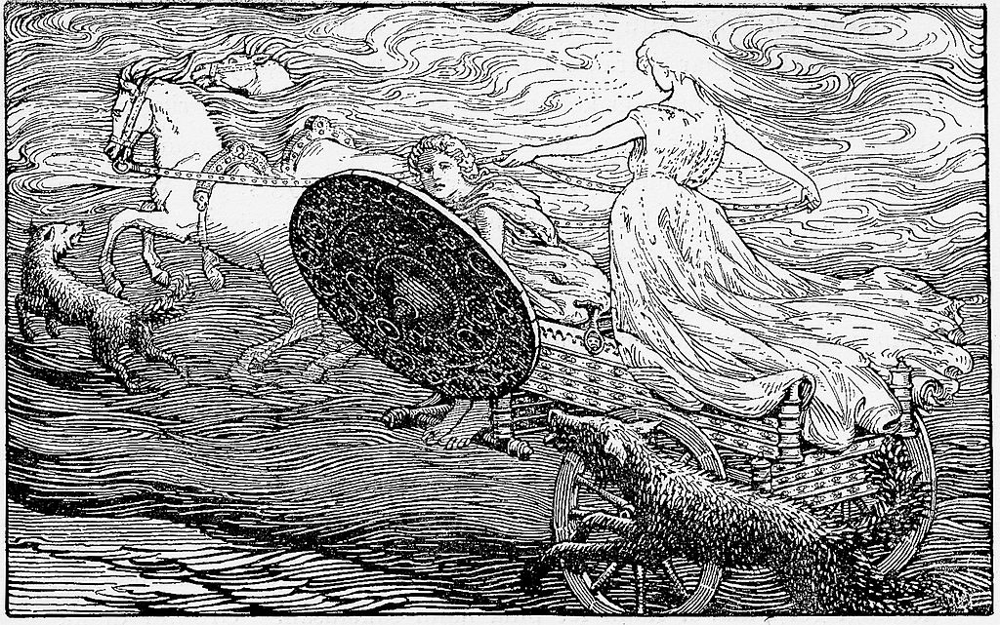
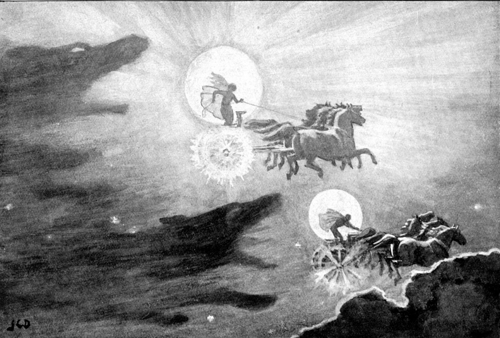
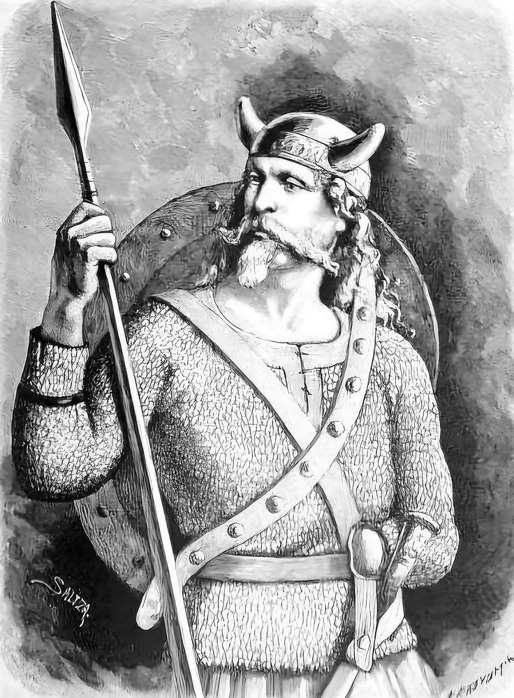
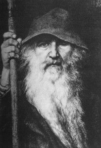
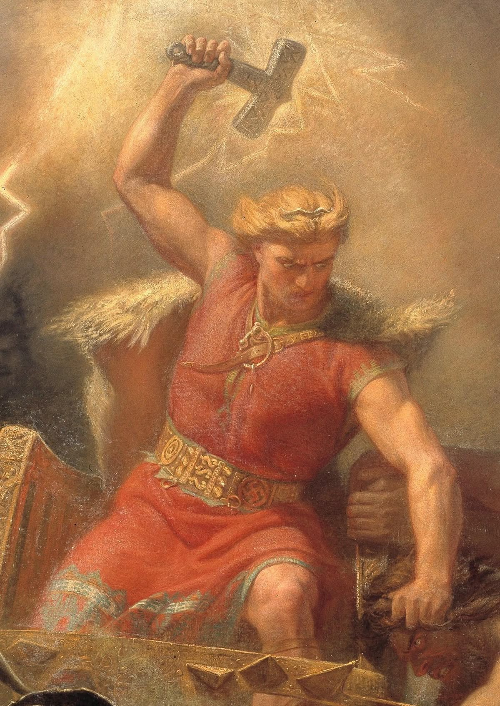
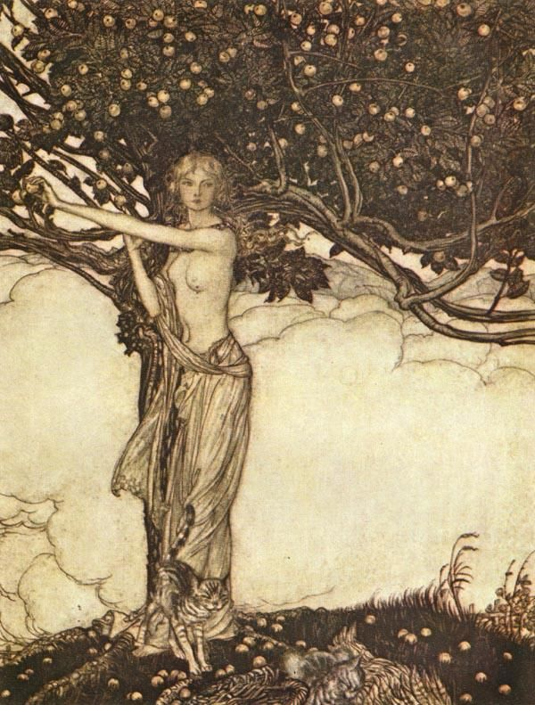
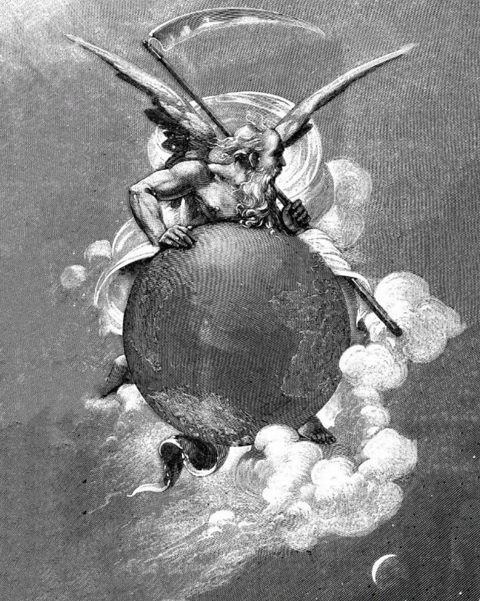

The days of the week
Sunday /ˈsʌn.deɪ/

“Sun, the companion of the Moon,
stretched her right hand
from the south
to the edge of the heavens;
the Sun knew not
where her home lay,
the stars knew not
where they should shine,
the Moon knew not
his own might.”
Monday /ˈmʌn.deɪ/

“Mundilfari is the name
of the father
of Sun and Moon;
across the heavens
they travel each day —
the measure of time.”
The second day of the week is named after the Moon, the brother of the Sun — Mani. Like his sister, he journeys across the sky in a chariot, governs the Moon and its phases, and, like her, is fated to be devoured by the wolf Hati on the day of Ragnarök.
Tuesday /ˈtjuːz.deɪ/

“Victory runes you must learn,
if victory you desire;
carve them upon the hilt of your sword,
some in the groove of the blade,
some upon the flat of the steel,
and mark them with the name of Týr.”
The third day of the week is named after Týr, the Germanic–Norse god of war, victory, and honor. The one-handed patron of warriors, he placed his right hand into the jaws of Fenrir so that the wolf might be bound. Thus, warriors carved his rune — shaped like an upward-pointing arrow — upon their weapons.
Wednesday /ˈwɛnz.deɪ/

“I am now called Odin,
I was once called Yggr,
also called Thund,
Vak and Skilfing,
Vavud and Hroptatýr,
Gaut and Jálkr among the gods,
Ofnir and Svafnir,
yet all these names
have ever been mine.”
Wednesday is named after Odin (Woden), the one-eyed god of the North, lord of the gods and warrior of wisdom. From his throne in Asgard he gazes upon all, seeing across the Nine Worlds, knowing the fate of both the living and the dead.
Thursday /ˈθɜːrz.deɪ/

“Körmt and Örmt,
and the two Kerlaugar,
Thor wades through
on the days when the Æsir
render judgment
beneath the ash Yggdrasil;
in that hour the sacred
waters boil,
and the bridge of the gods burns with flame.”
Thor, the son of Odin, is a valiant warrior and the defender of the worlds. He journeys in his chariot drawn by goats, and by battling the jötnar and giants he holds back the coming of Ragnarök. The enchanted hammer he wields grants him dominion over thunder and storm.
Friday /ˈfraɪ.deɪ/

“Rise, maiden,
lead me on,
show me the lineages of heroes;
I wish to know
the fates of mortals,
those who have fallen
and those who yet live.”
The sixth day of the week, Friday, is named after Freyja. She is the goddess of love, desire, and the hearth. Freyja has a husband, Óðr, who wanders endlessly through the worlds; she mourns his absence, weeping tears of gold, and then sets out in search of him across the earth.
Saturday /ˈsæt.ər.deɪ/

“The age was then golden,
when Saturn ruled over the earth:
men knew neither toil nor fear,
the land itself
bore its fruits,
and there was no need
for law or sword.”
The final day of the week is named after Saturn, the Roman god of time and fertility. His symbols are the sickle and the black cube, and his reign is associated with the Golden Age, when the earth and rivers were fertile, and humankind lived in harmony and equality.